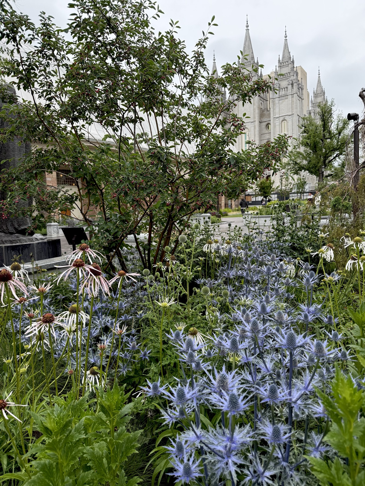
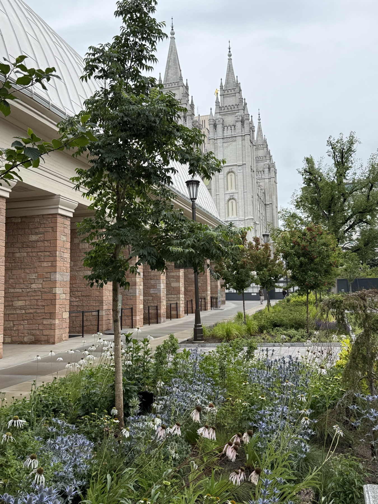

Temple Square | Salt Lake City, Utah






The place
At the heart of downtown Salt Lake City, Temple Square is historic ground on a civic scale — grounds that welcome millions of visitors a year. The multi-year landscaping overhaul at Historic Temple Square shifts the campus toward regional sustainability.
The brief
The redesign of Historic Temple Square shifts the campus toward regional sustainability — a collaborative process across landscape architecture and urban design that beautifully articulated a passion for creating an ecologically restorative environment, one that translated design excellence into actionable plans that actively renewed the built environment. Renovation of the Northwest Quadrant, Assembly Hall, and the Visitor Centers gardens, as well as the Temple deck and the North Entrance Pavilions, called for design that intentionally pivots away from resource-heavy, high-evaporation lawn models to embrace smart, data-driven irrigation and climate-resilient vegetation — saving 40 million to 50 million gallons of water annually.
The design
Traditional high-volume pop-up sprayers, which lose significant water to wind and atmospheric evaporation, were replaced with subsurface drip irrigation hoses distributing water directly to the base and root zones in gallons per hour instead of gallons per minute. The irrigation system is powered by central smart controllers and flow sensors, using live local humidity, soil composition, and weather forecasts to automatically skip cycles during rain or shift run-times into short, high-absorption bursts. System flow sensors monitor real-time output — if an underground line ruptures, the automation instantly flags the spike in pressure and alerts facilities management, preventing the loss of hundreds of thousands of gallons from hidden leaks.
The design called for a strategic botanical overhaul with a 35% turf grass reduction. Project coordinators systematically removed more than a third of the non-functional, purely decorative grass lawns. Seasonal annual beds were scaled back by nearly a third, reducing the amount of water needed to keep shallow-rooted annual flowers alive through desert heatwaves. The flower beds now emphasize hardy, deep-rooted perennials, shrubs, and native flora and grasses — once established, these varieties thrive on minimal moisture while boosting local pollinator biodiversity.
Canopy cooling called for a 30% increase in tree canopy: thousands of additional trees — compact blue spruces, aromatic varieties, and deep-shade species — were planted to systematically cool the earth below, mitigate the urban "heat island" effect of surrounding concrete plaza surfaces, and prevent the sun from baking moisture out of the underlying topsoil. For the functional lawns that remain, the square runs a summer lawn dormancy program: from June to September, water output to lawn turf is scaled back by 35% to 40%, and the grass is kept slightly longer to shade its own root network and maximize water retention.
Rather than a single static count of new saplings, project coordinators executed a complex, multi-stage forestry plan of preservation and relocation. Before the deep-soil excavations began, historically significant, healthy mature trees were carefully boxed and protected on-site, or removed from the construction zone and kept alive off-site, then brought back and replanted as the construction boundaries closed. The additional 30% surge in trees was purposefully designed to work as a functional climate tool — by blanketing a significantly larger portion of the open plaza in shade, the increased tree density drops the ambient ground temperature, directly reducing the amount of water that evaporates from the soil beds during intense Utah summers.